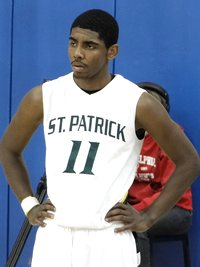
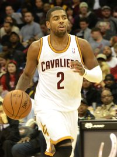
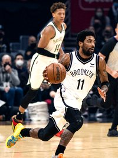
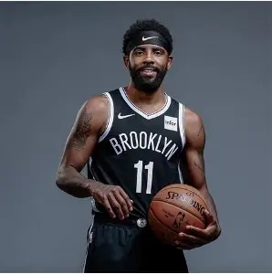

人物生涯
杜克一年、状元起步、四支球队、一次重伤之后的回归



从墨尔本到杜克
凯里·欧文（Kyrie Irving），男，1992 年 3 月 23 日出生于澳大利亚墨尔本，美国职业篮球运动员，司职控球后卫，效力于 NBA 达拉斯独行侠队。
2010 年，欧文与哈里森·巴恩斯共同当选乔丹精英赛最有价值球员。同年进入杜克大学，代表杜克参加 NCAA 大学篮球比赛。
大一赛季，欧文在年底对阵巴特勒大学的比赛中右脚严重受伤，缺席了三个多月。2010-11 赛季，他在出场的 11 场比赛里场均得到 17.5 分、3.4 个篮板和 4.3 次助攻。2011 年 4 月 7 日，欧文宣布参加当年 NBA 选秀。

NBA 的十四个赛季
2011 年，克利夫兰骑士队用状元签选中欧文。2011-12 赛季，他荣膺赛季最佳新秀并入选最佳新秀阵容一阵；2013 年拿到全明星三分大赛冠军；2013-14 赛季入选全明星东部首发并当选全明星赛最有价值球员；2015-16 赛季随骑士夺得 NBA 总冠军。
2017 年 8 月 2 日，波士顿凯尔特人队从骑士交易得到欧文，2018-19 赛季他入选赛季最佳阵容二阵。2019 年 7 月加盟布鲁克林篮网队，2020-21 赛季入选赛季最佳阵容三阵。2023 年 2 月 6 日被交易至达拉斯独行侠队。
2025 年 3 月，欧文遭遇左膝前十字韧带撕裂，赛季提前报销；同年 7 月，独行侠官宣与欧文完成续约。
国家队层面，2014 年欧文随美国男篮夺得首届男篮世界杯冠军，当选赛事最有价值球员并入选最佳阵容，同年当选“美国篮协 2014 年度最佳男运动员”；2016 年 8 月，随美国男篮夺得里约奥运会男篮金牌。
生涯时间线
- 2010与哈里森·巴恩斯共同当选乔丹精英赛 MVP；同年进入杜克大学
- 2011被克利夫兰骑士队用状元签选中
- 2011-12赛季最佳新秀，入选最佳新秀阵容一阵
- 2013全明星三分大赛冠军
- 2013-14全明星东部首发，当选全明星赛 MVP
- 2014随美国男篮夺得首届男篮世界杯冠军，当选赛事 MVP
- 2014-15入选赛季最佳阵容第三阵容
- 2015-16随骑士队夺得 NBA 总冠军
- 2016·8随美国男篮夺得里约奥运会金牌
- 2017·8被交易至波士顿凯尔特人队
- 2018-19入选赛季最佳阵容第二阵容
- 2019·7加盟布鲁克林篮网队
- 2020-21入选赛季最佳阵容第三阵容
- 2023·2被交易至达拉斯独行侠队
- 2025·3左膝前十字韧带撕裂，赛季提前报销
- 2025·7与达拉斯独行侠队完成续约